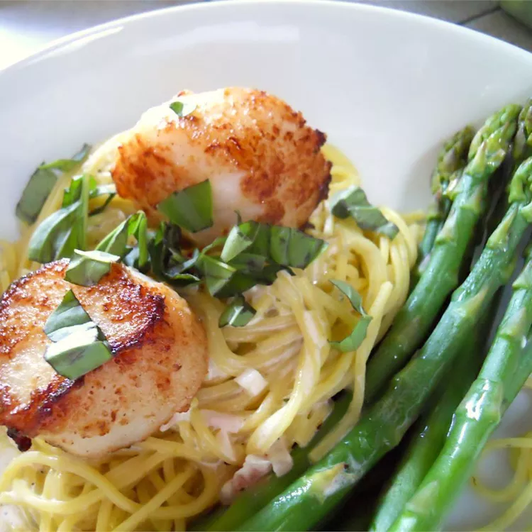

Seared Sea Scallops

Description
Seared on the outside with a light crust and tender on the inside. You may vary the amounts of all seasonings to suit your taste.
Ingredients
- ½ cup all-purpose flour
- 2 teaspoons seasoning salt
- ½ teaspoon dried oregano
- ½ teaspoon dried thyme
- 2 tablespoons lemon pepper
- 16 sea scallops, rinsed and drained
- 2 tablespoons olive oil
- 4 tablespoons chopped fresh parsley, divided
- 4 teaspoons lemon juice, divided
Steps
- In a large bowl, mix together flour, salt, oregano, thyme and lemon pepper. Roll scallops in flour mixture until lightly coated on all sides.
- Heat olive oil in a skillet or frying pan over high heat. Add 4 scallops to the pan and sear on all sides (about 2 minutes for each side). After turning scallops, add 1 tablespoon parsley and 1 teaspoon lemon juice. Remove scallops from pan and place on a plate in the oven to keep warm until ready to serve.
- Repeat until remaining scallops are cooked, tossing each batch with parsley and lemon juice.